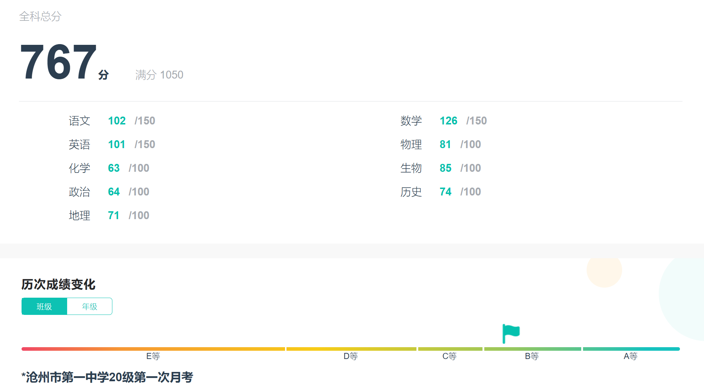
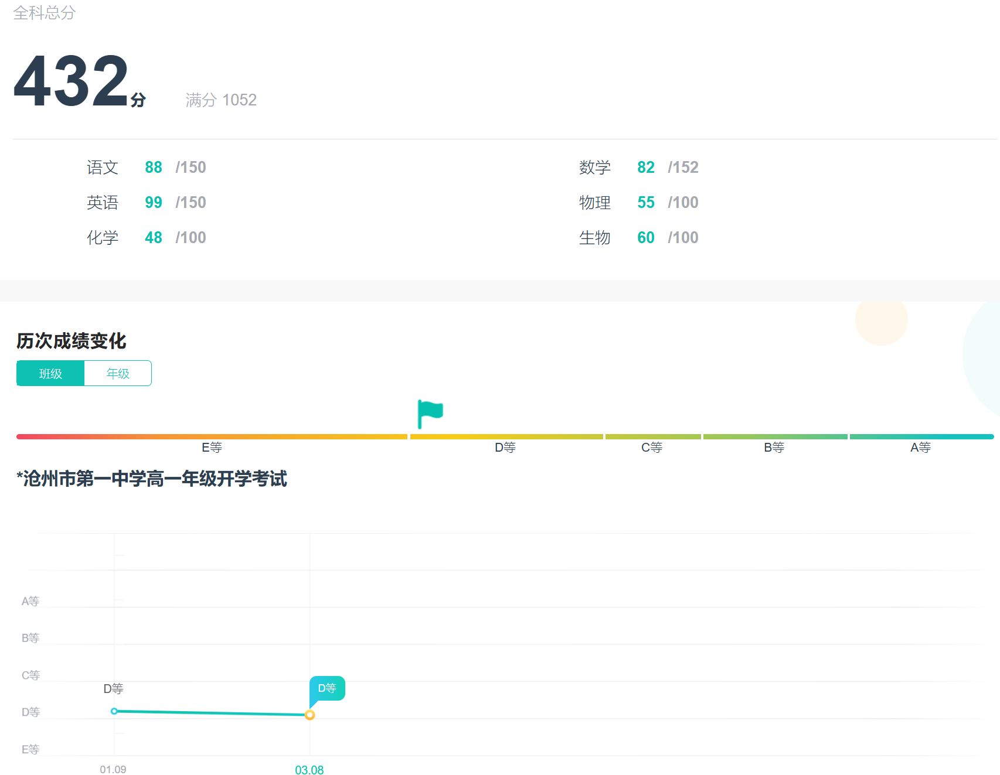
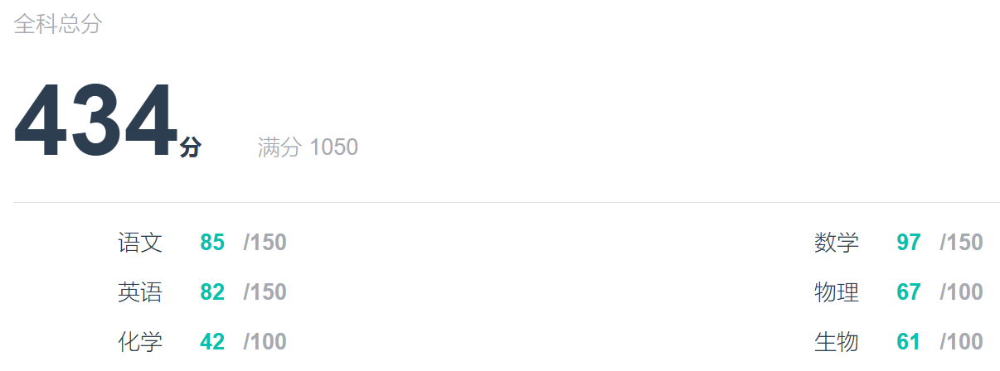
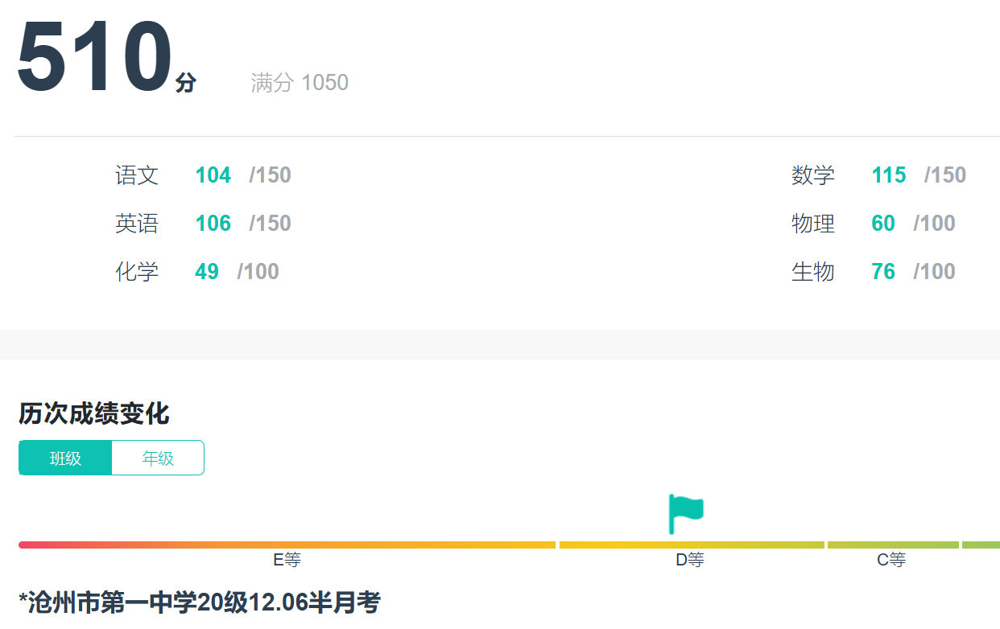
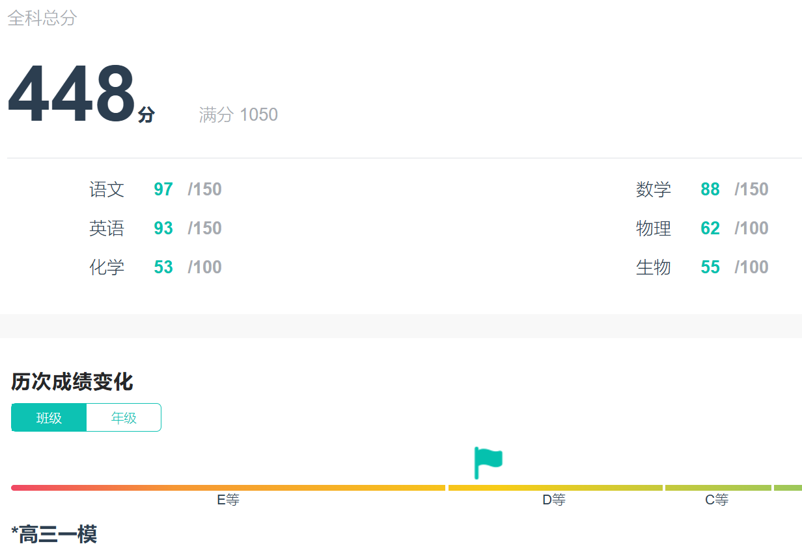
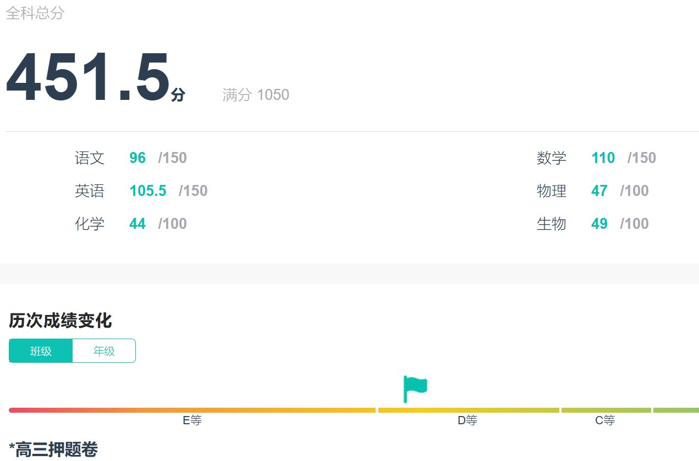
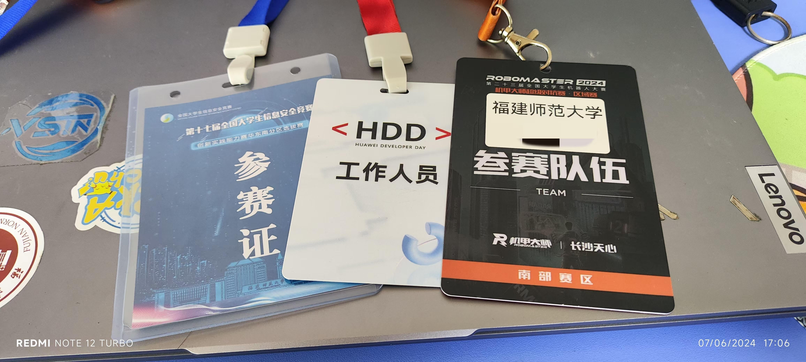
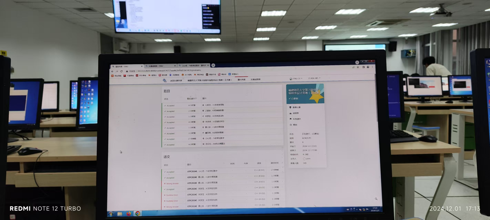
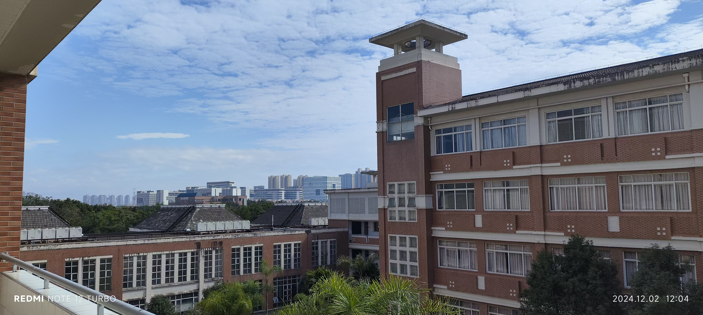

2024年终总结&回首过去几年
算是个年终总结，也总结了半秩
总述
高一
大概是2020年，卡线进了沧州一中
当时成绩平平无奇，在普通班大概是排二十多名的位置

然后高一还是比较平静的吧，刚开学不久学校有信竞集训队招新，然后去考了个试，然后进了集训队，认识了很多大佬
开学后三个月，去打了CSP-S2020，T1打了三个小时，最后一个小时都在吃东西~
赛后测试代码，T1（儒略日，大模拟）拿了10分，原本能晋级的，结果忘记给每道题都建立一个文件夹了，然后遗憾退场（悲
noip2021再战
至于whk，那时候马上就要是”得E门生“了

不过排名基本没变，大概班里二十多名，学校七八百名（物理组合）

直到高二，一直如此
高二
CSP/NOIP2021前夕，几乎全天待在机房练题，whk基本没时间学
那段时间的大致安排是，上午正常上课，然后下午和晚自习就在机房里备赛；然后我那段时间基本上是上午课间的时候抓紧时间写作业，有时可以把作业（已经想不到当时是怎么卷的了）；noip打完之后回归whk，基本上白天写完作业绰绰有余，晚上可以自己写练习册了
最后结果，csp省二 noip省三，有点小遗憾，但也知足了
没找到当时的成绩，我只记得刚打完csp回来的月考，没进前900来着
打完比赛，就可以开始专心学whk了

这次好歹是上500分了
转眼到了高二下学期，联考成绩单没在智学网上找到，不过我印象比较深刻，班上第二名，物理组总排第299（这辈子头一次进前300）
高三
然后高三了，就都卷起来了，进步就比较困难了，常年稳定在400-500这样子，不过也是鸡汤看的不少，知道高三心态很重要，然后就埋头学习，学累了看会鸡汤，然后继续学（大雾
讲真压力不小，集训队的其他dalao都进阶北大班了，我还在普通班
题目难度上来了，分数基本在450左右，但是排名基本不变
好像是高三上学期，数学一直没有什么进步，比较感动自己的是把朱昊鲲《2000题》一个月刷了一遍（还把错题总结出来了），基本上是每个晚自习都在刷，中午午休的时候也刷；正好赶上一次运动会，记得那一天正好把几何的一大章写完


高三下学期，快高考了，但是语文基本没上过百；听了石油的说法，思考了一下，然后做了一个挺斩钉截铁的决定，拿出整整15天的时间，这段时间每科自己买的试卷都不做了，就只做语文高考真题。在这之后虽然语文依旧没有起色，但是最后高考的时候数学英语发挥的一般，而语文118。我觉得和这一抉择有很大的关联
高考前一两个月吧，我和我同桌经常一块刷题，在限定时间内比正确率，物化生都刷，数学也刷，嘎嘎刷；讲真那段时间刷题真的刷爽了，有一次45分钟我做了两套物理试卷（好像是名校模考卷）的选择题，总共只错了三道题，总之就是挺爽的
最终一分不浪费，录取到了FJNU
大一
感觉大一还是相对迷茫的，不过也有不少收获
先说算法竞赛，因为高中学过，所以理所当然大学想打ACM，但是由于比较复杂的原因，最终没有选择ACM（属于是取舍的问题，不过后来想明白了）
因为大一就下定决心不保研了，所以学业这边相对轻松；然后就可以随便打比赛，一段时间的练习逐渐成为了python中手（不是高手也不是低手），CTF被学长带飞然后拿了奖；RoboMaster这边也学到了不少嵌入式知识；而且还混了个数学建模小比赛的奖
机器人相关，沧一有这样的社团但是不在普通班招，有点遗憾；这也是我大学来机器人社团学和本专业毫无关联的嵌入式的原因之一，耗费了不少时间和精力，但是感觉相当划算，现在想自己手搓个什么简单电路基本没有问题，即使有问题也解能决问题

大二
大二这一年还没过完，不过想清楚很多事情；很多东西都是要取舍，知道了自己需要什么，需要做什么，因而之后的道路也比较清晰了
关于算法竞赛，太功利去看待他并不是一件好事，但是确实很锻炼思维能力；虽然没进大学的集训队，这段时间也经常打Codeforces，前两天的校赛还取得了不错的成绩

关于CTF，它和以后的就业是相对绑定的；大一锻炼了一年的代码能力，现在手搓（或者熟练使用AI）完成个什么算法也相对轻松；所以基本而言是有利的，性价比较高的
现在机器人这边也在干一个小项目，确实不大，但也学到很多东西
后面的路，应当会越走越宽的

未完待续~
.gif)
.gif)
.gif)
.gif)
.gif)
.gif)
.gif)
.gif)
.gif)
.gif)